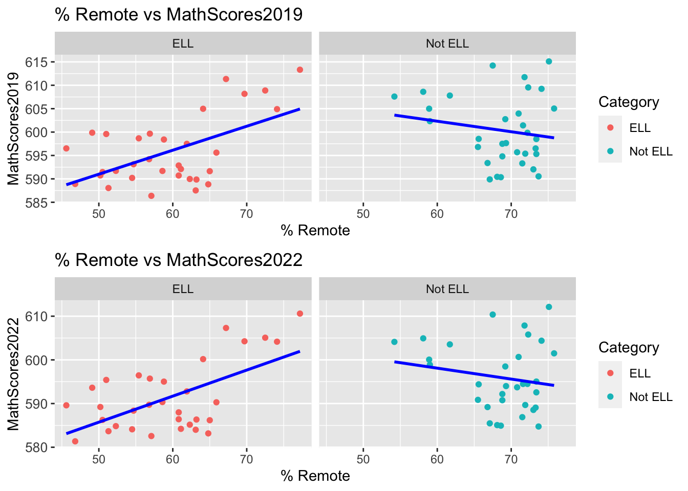
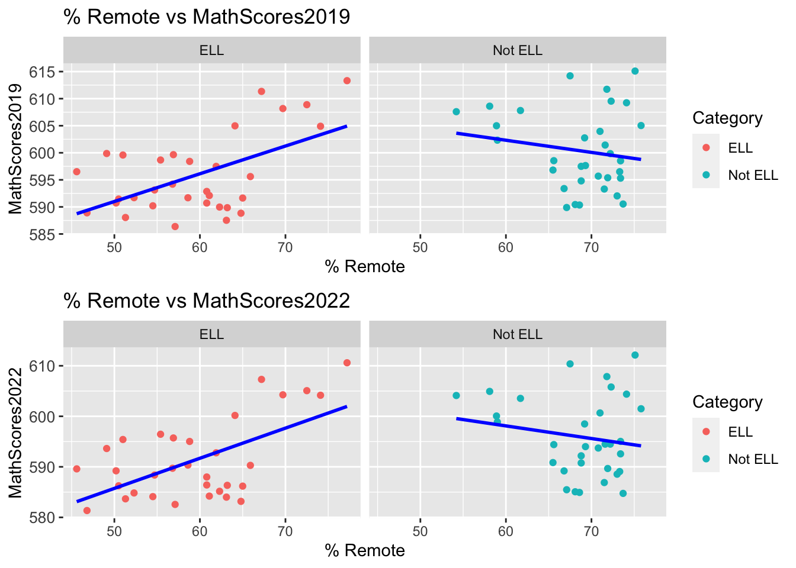

Chapter 3 Data
3.1 Sources
The first dataset we used is Learning Preference City Remote Learning from the NYC Department of Education. It consists of total enrollment count for students who prefer remote or hybrid learning, and who have attended school in person at least once since September 2020. The samples are collected from NYC public schools grades K-12 for each district. The dataset is as of January 4, 2021 and made public on March 11, 2021.
This dataset is formatted with 8 columns and 876 rows of observations. The columns consist of district number, disaggregation category, category, number of total enrollment, number blended, percent blended, number remote, and percent remote. District number is our key/common variable used to combine other datasets that give metrics regarding specific district numbers for the same time period. Disaggregation category is a sub variable of different categories, such as gender or grade level. Category contains the specific group of that variable. For example, if disaggregation category is gender then the category groups are female and male for that specific district. These demographics will be used for visualizations and finding patterns. Blended refers to preference towards hybrid learning, and remote refers to preference towards remote learning.
This dataset is updated on an as needed basis. It is imported directly through the NYC Open Data website as an excel file, which is a government project providing open source data produced and used by City government. Students attending charter schools, receiving home or hospital instruction, pre-K students, and attending certain specific programs are not included. In order to comply with regulations of the Family Educational Rights and Privacy Act on public reporting of education outcomes, data of groups with less than 5 students enrolled are suppressed with an “s”.
The second and third datasets we used are ELA and Math Test results for students from grade 3 to grade 8 for different districts. The datasets are collected from the NYC Department of Education, and are updated annually.
Each dataset contains 6 different subsets. All sub-datasets split the students by districts since district is the main variable for us to combine all datasets for this project. For this project, we will use data values for year 2019 (before the pandemic) and 2022 (the first time after the pandemic when all students were required to take those exams) to study the effect of how students’ previous test outcomes influence their learning choices and also how their preferences influence their learning outcomes. We will also use data values for years 2018, 2019, and 2022 to study how the pandemic changed student learning outcomes.
Specifically, for both ELA and Math Test results, the sub datasets are: All - this dataset contains information of the test results of all students. This dataset has 1792 rows and 16 columns. SWD - this dataset split student test results based on whether the students are SWD (students with disabilities). This dataset has 3584 rows and 16 columns. Ethnicity - this dataset split student test results based on student race and ethnicity (Asian, Black, Hispanic, White). This dataset has 7168 rows and 16 columns. Gender - this dataset split student test results based on student gender (male, female). This dataset has 3584 rows and 16 columns. Econ Status - this dataset split student test results based on whether the student is economically disadvantaged. This dataset has 3584 rows and 16 columns. ELL - this dataset split the test results based on ELL (English Language Learner) status (current ELL, ever ELL, never ELL). This dataset has 4704 rows and 16 columns.
Some Limitations of the datasets: Compare to other datasets we will use for this project, some districts are missing (districts 75, 79, and 84) The scale for ELA and Math exams changed in 2018. In addition, the tests for 2020 were canceled due to the pandemic, and the tests for 2021 were voluntary. Therefore, we will only use data for 2018 and 2022. For the ethnicity dataset, other ethnicity groups such as multi-racial and native american are not included. For the gender dataset, other genders such as cisgender, transgender, and non-binary are not included.
The datasets can be downloaded from the infohub of NYC Department of Education as Excel files, and can be imported to R directly.
In Section 2.2, we mentioned also including a dataset on demographic snapshots per district. However, we decided to omit that dataset because the demographics we decided to ultimately focus on were already in the remote learning and test scores data sets. The demographic snapshots dataset included economic needs index per district, which would be an interesting variable to compare to remote learning preferences. However, that analysis would be too in depth and deserves its own project.
Some issues we discover in this data include the complexity of tidying up the dataset, and the missing values in the math and ELA scores data sets. We will disguss how we resolved these issues in the following sections.
URLs: Data Set 1: Remote Learning Preferences https://data.cityofnewyork.us/Education/Learning-Preference-City-Remote-Learning-as-of-Jan/k5d2-tkrr Data Set 2: ELA Test Scores https://infohub.nyced.org/docs/default-source/default-document-library/district-ela-results-2013-2022-(public).xlsx Data Set 3: Math Test Scores https://infohub.nyced.org/docs/default-source/default-document-library/district-math-results-2013-2022-(public).xlsx
3.2 Cleaning / transformation
Our data required a significant amount of preprocessing due to the structure of the datasets from the New York City website. Our goal is to join the learning preference, math test scores, and ELA test scores by district number and demographics. We had to split each sheet from the CSV file into separate dataframes and manipulate the Math scores and ELA scores datasets to match the district number and disaggregation categories in the learning preference dataset. This allowed us to perform a right join and add the test scores as new variables in the learning preference dataset. We also added rows that represented the aggregate means for each district. Furthermore, we created a separate variable to categorize the percent remote learning variable as “High” for high remote learning preference, “Middle” for medium remote learning preference, and “Low” for lower remote learning preference. The final comprehensive dataset is called “df”, and the dataset with just the district aggregates is called “df_total”.
3.2.1 Loading in Data
To begin, we loaded the remote learning preference, Math scores, and ELA scores datasets into RStudio. Since the Math and ELA scores datasets were in the form of a CSV file with multiple sheets, we wrote a function called “read_excel_allsheets” to read them all into RStudio. We then saved each relevant sheet to a new dataframe.
#libraries
library(tidyverse)
library(here)
library(readxl)
library(dplyr)
library(zoo)
library(ggplot2)
library(remotes)
library(redav)
library(naniar)
library(ggpubr)
#reading in learning preferences dataset
learning_pref <- read_csv(here::here("datasets", "Learning_Preferences.csv"),show_col_types = FALSE)
#Our other datasets have multiple sheets, so this is a function to read all of them in
read_excel_allsheets <- function(filename, tibble = FALSE) {
sheets <- readxl::excel_sheets(filename)
x <- lapply(sheets, function(X) readxl::read_excel(filename, sheet = X))
if(!tibble) x <- lapply(x, as.data.frame)
names(x) <- sheets
x
}
#reading district math results excel and creating dataframes for each relevant sheet
math_scores <- read_excel_allsheets(here::here("datasets","district-math-results-2013-2022-(public).xlsx"))
math_scores_all <- math_scores[["All"]]
math_scores_swd <- math_scores[["SWD"]]
math_scores_ethnicity <- math_scores[["Ethnicity"]]
math_scores_gender <- math_scores[["Gender"]]
math_scores_econstatus <- math_scores[["Econ Status"]]
math_scores_ell <- math_scores[["ELL"]]
math_scores_2019 <- read_excel_allsheets(here::here("datasets","district-math-results-2013-2022-(public).xlsx"))
math_scores_all_2019 <- math_scores[["All"]]
math_scores_swd_2019 <- math_scores[["SWD"]]
math_scores_ethnicity_2019 <- math_scores[["Ethnicity"]]
math_scores_gender_2019 <- math_scores[["Gender"]]
math_scores_econstatus_2019 <- math_scores[["Econ Status"]]
math_scores_ell_2019 <- math_scores[["ELL"]]
#reading district ELA results excel and creating dataframes for each relevant sheet
ela_scores <- read_excel_allsheets(here::here("datasets","district-ela-results-2013-2022-(public).xlsx"))
ela_scores_all <- ela_scores[["All"]]
ela_scores_swd <- ela_scores[["SWD"]]
ela_scores_ethnicity <- ela_scores[["Ethnicity"]]
ela_scores_gender <- ela_scores[["Gender"]]
ela_scores_econstatus <- ela_scores[["Econ Status"]]
ela_scores_ell <- ela_scores[["ELL"]]
ela_scores_2019 <- read_excel_allsheets(here::here("datasets","district-ela-results-2013-2022-(public).xlsx"))
ela_scores_all_2019 <- ela_scores[["All"]]
ela_scores_swd_2019 <- ela_scores[["SWD"]]
ela_scores_ethnicity_2019 <- ela_scores[["Ethnicity"]]
ela_scores_gender_2019 <- ela_scores[["Gender"]]
ela_scores_econstatus_2019 <- ela_scores[["Econ Status"]]
ela_scores_ell_2019 <- ela_scores[["ELL"]]
#reading demographic snapshot excel and creating a dataframe for just the district sheet
demo <- read_excel_allsheets(here::here("datasets","demographic-snapshot.xlsx"))[["District"]]3.2.2 Cleaning Data to Prepare for Merge
3.2.2.1 Cleaning Learning Preference Dataset
To clean the learning preference dataset and prepare it for the merge, we retained only the 32 school districts that had test scores in the other datasets. For the same reason, in the grades category, we removed PK, 0K, grades 1-2, and grades 9-12 to maintain consistency with the other datasets. We also renamed the variables to facilitate the merging process.
#keeping only the 32 school districts in learning_pref and dropping grades 1-2,9-12,PK and 0K to be consistent with other datasets
learning_pref <- learning_pref %>% subset(District<33) %>% subset(!Category=="1") %>% subset(!Category=="2") %>% subset(!Category=="9") %>% subset(!Category=="10") %>% subset(!Category=="11") %>% subset(!Category=="12") %>% subset(!Category=="PK")%>% subset(!Category=="0K") %>% subset(!Category=="All District")
names(learning_pref)[names(learning_pref) == "`Disaggregation Category`"] = "Disaggregation Category"
names(learning_pref)[names(learning_pref) == "# Total Enrollment"] = "Total Enrollment"
names(learning_pref)[names(learning_pref) == "# Remote"] = "Remote"
names(learning_pref)[names(learning_pref) == "% Remote"] = "Percent Remote"
#renaming variable to make it easier to merge with other datasets 3.2.2.2 Cleaning the Test Scores Datasets
For the Math and ELA test scores, we focused on scores from the years 2019 and 2022 to show the difference between pre-Covid and post-Covid test results. Each sheet from the CSV file that we divided corresponds to a specific disaggregation category that needed to be matched with the learning preference dataset. For each sheet, we selected the years 2019 and 2022, and renamed the specific category levels to match the learning preference dataset.
#keeping only scores from 2022, and removing the "all grade" category
math_scores_all_2022 <- math_scores_all %>% subset(Year=="2022") %>% subset(!Grade=="All Grades")
math_scores_ethnicity_2022 <- math_scores_ethnicity %>% subset(Year=="2022") %>% subset(!Grade=="All Grades")
math_scores_gender_2022 <- math_scores_gender %>% subset(Year=="2022") %>% subset(!Grade=="All Grades")
math_scores_econstatus_2022 <- math_scores_econstatus %>% subset(Year=="2022") %>% subset(!Grade=="All Grades")
math_scores_ell_2022 <- math_scores_ell %>% subset(Year=="2022") %>% subset(!Grade=="All Grades") %>% mutate(Category = recode(Category,
"Current ELL" = "ELL",
"Ever ELL" = "ELL",
"Never ELL" = "Not ELL")) #renaming factor levels to match learning_pref dataset
ela_scores_all_2022 <- ela_scores_all %>% subset(Year=="2022") %>% subset(!Grade=="All Grades")
ela_scores_ethnicity_2022 <- ela_scores_ethnicity %>% subset(Year=="2022") %>% subset(!Grade=="All Grades")
ela_scores_gender_2022 <- ela_scores_gender %>% subset(Year=="2022") %>% subset(!Grade=="All Grades")
ela_scores_econstatus_2022 <- ela_scores_econstatus %>% subset(Year=="2022") %>% subset(!Grade=="All Grades")
ela_scores_ell_2022 <- ela_scores_ell %>% subset(Year=="2022") %>% subset(!Grade=="All Grades") %>% mutate(Category = recode(Category,
"Current ELL" = "ELL",
"Ever ELL" = "ELL",
"Never ELL" = "Not ELL")) #renaming factor levels to match learning_pref dataset
#keeping only scores from 2019, and removing the "all grade" category
math_scores_all_2019 <- math_scores_all_2019 %>% subset(Year=="2019") %>% subset(!Grade=="All Grades")
math_scores_ethnicity_2019 <- math_scores_ethnicity %>% subset(Year=="2019") %>% subset(!Grade=="All Grades")
math_scores_gender_2019 <- math_scores_gender %>% subset(Year=="2019") %>% subset(!Grade=="All Grades")
math_scores_econstatus_2019 <- math_scores_econstatus %>% subset(Year=="2019") %>% subset(!Grade=="All Grades")
math_scores_ell_2019 <- math_scores_ell %>% subset(Year=="2019") %>% subset(!Grade=="All Grades") %>% mutate(Category = recode(Category,
"Current ELL" = "ELL",
"Ever ELL" = "ELL",
"Never ELL" = "Not ELL")) #renaming factor levels to match learning_pref dataset
ela_scores_all_2019 <- ela_scores_all %>% subset(Year=="2019") %>% subset(!Grade=="All Grades")
ela_scores_ethnicity_2019 <- ela_scores_ethnicity %>% subset(Year=="2019") %>% subset(!Grade=="All Grades")
ela_scores_gender_2019 <- ela_scores_gender %>% subset(Year=="2019") %>% subset(!Grade=="All Grades")
ela_scores_econstatus_2019 <- ela_scores_econstatus %>% subset(Year=="2019") %>% subset(!Grade=="All Grades")
ela_scores_ell_2019 <- ela_scores_ell %>% subset(Year=="2019") %>% subset(!Grade=="All Grades") %>% mutate(Category = recode(Category,
"Current ELL" = "ELL",
"Ever ELL" = "ELL",
"Never ELL" = "Not ELL")) #renaming factor levels to match learning_pref dataset3.2.3 Merging Datasets
3.2.3.1 Creating Dataframe for District 1
We initiated the merging process by focusing on merging the learning preferences, Math scores, and ELA scores for District 1. We split the 2019 and 2022 Math and ELA scores by district, and then calculated the weighted mean of each score by category (for instance, for the disaggregation category “sex”, we calculated the weighted mean scores for males and females). We then merged all of those dataframes by district number, disaggregation category, and category. Finally, we merged that dataframe with the District 1 remote learning preferences dataset, and created a new row with the average scores and average learning preferences. This dataframe was called district_1. We then created a dataframe called “df_super” that will be used in the subsequent for loop.
##District 1##
#Math scores
#Mean math scores by ELL
math_scores_ell_temp_2019 <- split(math_scores_ell_2019, f = math_scores_ell_2019$District)
math_scores_ell_temp_1_2019 <- math_scores_ell_temp_2019[["1"]] %>%
group_by(Category) %>%
summarise(`Mean Scale Score`= weighted.mean(`Mean Scale Score`,`Number Tested`))
math_scores_ell_temp_1_2019$District <- "1"
math_scores_ell_temp_1_2019$"Disaggregation Category" <- "English Language Learner Status"
math_scores_ell_temp_1_2019 <- math_scores_ell_temp_1_2019[, c(3, 4, 1, 2)]
#Mean math scores by gender
math_scores_gender_temp_2019 <- split(math_scores_gender_2019, f = math_scores_gender_2019$District)
math_scores_gender_temp_1_2019 <- math_scores_gender_temp_2019[["1"]] %>%
group_by(Category) %>%
summarise(`Mean Scale Score`= weighted.mean(`Mean Scale Score`,`Number Tested`))
math_scores_gender_temp_1_2019$District <- "1"
math_scores_gender_temp_1_2019$"Disaggregation Category" <- "Gender"
math_scores_gender_temp_1_2019 <- math_scores_gender_temp_1_2019[, c(3, 4, 1, 2)]
#Mean math scores by grade level
math_scores_all_temp_2019 <- split(math_scores_all_2019, f = math_scores_all_2019$District)
math_scores_all_temp_1_2019 <- math_scores_all_temp_2019[["1"]] %>%
group_by(Grade) %>%
summarise(`Mean Scale Score`= weighted.mean(`Mean Scale Score`,`Number Tested`))
math_scores_all_temp_1_2019$District <- "1"
math_scores_all_temp_1_2019$"Disaggregation Category" <- "Grade Level"
math_scores_all_temp_1_2019 <- math_scores_all_temp_1_2019[, c(3, 4, 1, 2)]
names(math_scores_all_temp_1_2019)[names(math_scores_all_temp_1_2019) == "Grade"] = "Category"
#Mean math scores by race/ethnicity
math_scores_ethnicity_temp_2019 <- split(math_scores_ethnicity_2019, f = math_scores_ethnicity_2019$District)
math_scores_ethnicity_temp_1_2019 <- math_scores_ethnicity_temp_2019[["1"]] %>%
group_by(Category) %>%
summarise(`Mean Scale Score`= weighted.mean(`Mean Scale Score`,`Number Tested`))
math_scores_ethnicity_temp_1_2019$District <- "1"
math_scores_ethnicity_temp_1_2019$"Disaggregation Category" <- "Race or Ethnicity"
math_scores_ethnicity_temp_1_2019 <- math_scores_ethnicity_temp_1_2019[, c(3, 4, 1, 2)]
#combining all math score datasets
math_scores_temp_2019 <- rbind(math_scores_ell_temp_1_2019,math_scores_gender_temp_1_2019,math_scores_all_temp_1_2019,math_scores_ethnicity_temp_1_2019)
#ELA scores
#Mean ela scores by ELL
ela_scores_ell_temp_2019 <- split(ela_scores_ell_2019, f = ela_scores_ell_2019$District)
ela_scores_ell_temp_1_2019 <- ela_scores_ell_temp_2019[["1"]] %>%
group_by(Category) %>%
summarise(`Mean Scale Score`= weighted.mean(`Mean Scale Score`,`Number Tested`))
ela_scores_ell_temp_1_2019$District <- "1"
ela_scores_ell_temp_1_2019$"Disaggregation Category" <- "English Language Learner Status"
ela_scores_ell_temp_1_2019 <- ela_scores_ell_temp_1_2019[, c(3, 4, 1, 2)]
#Mean ela scores by gender
ela_scores_gender_temp_2019 <- split(ela_scores_gender_2019, f = ela_scores_gender_2019$District)
ela_scores_gender_temp_1_2019 <- ela_scores_gender_temp_2019[["1"]] %>%
group_by(Category) %>%
summarise(`Mean Scale Score`= weighted.mean(`Mean Scale Score`,`Number Tested`))
ela_scores_gender_temp_1_2019$District <- "1"
ela_scores_gender_temp_1_2019$"Disaggregation Category" <- "Gender"
ela_scores_gender_temp_1_2019 <- ela_scores_gender_temp_1_2019[, c(3, 4, 1, 2)]
#Mean ela scores by grade level
ela_scores_all_temp_2019 <- split(ela_scores_all_2019, f = ela_scores_all_2019$District)
ela_scores_all_temp_1_2019 <- ela_scores_all_temp_2019[["1"]] %>%
group_by(Grade) %>%
summarise(`Mean Scale Score`= weighted.mean(`Mean Scale Score`,`Number Tested`))
ela_scores_all_temp_1_2019$District <- "1"
ela_scores_all_temp_1_2019$"Disaggregation Category" <- "Grade Level"
ela_scores_all_temp_1_2019 <- ela_scores_all_temp_1_2019[, c(3, 4, 1, 2)]
names(ela_scores_all_temp_1_2019)[names(ela_scores_all_temp_1_2019) == "Grade"] = "Category"
#Mean ela scores by race/ethnicity
ela_scores_ethnicity_temp_2019 <- split(ela_scores_ethnicity_2019, f = ela_scores_ethnicity_2019$District)
ela_scores_ethnicity_temp_1_2019 <- ela_scores_ethnicity_temp_2019[["1"]] %>%
group_by(Category) %>%
summarise(`Mean Scale Score`= weighted.mean(`Mean Scale Score`,`Number Tested`))
ela_scores_ethnicity_temp_1_2019$District <- "1"
ela_scores_ethnicity_temp_1_2019$"Disaggregation Category" <- "Race or Ethnicity"
ela_scores_ethnicity_temp_1_2019 <- ela_scores_ethnicity_temp_1_2019[, c(3, 4, 1, 2)]
#combining all ela score datasets
ela_scores_temp_2019 <- rbind(ela_scores_ell_temp_1_2019,ela_scores_gender_temp_1_2019,ela_scores_all_temp_1_2019,ela_scores_ethnicity_temp_1_2019)
#combining Math + ela score datasets
district_1_scores_2019 <- merge(math_scores_temp_2019,ela_scores_temp_2019,by=c("District","Disaggregation Category","Category"))
#Math scores
#Mean math scores by ELL
math_scores_ell_temp_2022 <- split(math_scores_ell_2022, f = math_scores_ell_2022$District)
math_scores_ell_temp_1_2022 <- math_scores_ell_temp_2022[["1"]] %>%
group_by(Category) %>%
summarise(`Mean Scale Score`= weighted.mean(`Mean Scale Score`,`Number Tested`))
math_scores_ell_temp_1_2022$District <- "1"
math_scores_ell_temp_1_2022$"Disaggregation Category" <- "English Language Learner Status"
math_scores_ell_temp_1_2022 <- math_scores_ell_temp_1_2022[, c(3, 4, 1, 2)]
#Mean math scores by gender
math_scores_gender_temp_2022 <- split(math_scores_gender_2022, f = math_scores_gender_2022$District)
math_scores_gender_temp_1_2022 <- math_scores_gender_temp_2022[["1"]] %>%
group_by(Category) %>%
summarise(`Mean Scale Score`= weighted.mean(`Mean Scale Score`,`Number Tested`))
math_scores_gender_temp_1_2022$District <- "1"
math_scores_gender_temp_1_2022$"Disaggregation Category" <- "Gender"
math_scores_gender_temp_1_2022 <- math_scores_gender_temp_1_2022[, c(3, 4, 1, 2)]
#Mean math scores by grade level
math_scores_all_temp_2022 <- split(math_scores_all_2022, f = math_scores_all_2022$District)
math_scores_all_temp_1_2022 <- math_scores_all_temp_2022[["1"]] %>%
group_by(Grade) %>%
summarise(`Mean Scale Score`= weighted.mean(`Mean Scale Score`,`Number Tested`))
math_scores_all_temp_1_2022$District <- "1"
math_scores_all_temp_1_2022$"Disaggregation Category" <- "Grade Level"
math_scores_all_temp_1_2022 <- math_scores_all_temp_1_2022[, c(3, 4, 1, 2)]
names(math_scores_all_temp_1_2022)[names(math_scores_all_temp_1_2022) == "Grade"] = "Category"
#Mean math scores by race/ethnicity
math_scores_ethnicity_temp_2022 <- split(math_scores_ethnicity_2022, f = math_scores_ethnicity_2022$District)
math_scores_ethnicity_temp_1_2022 <- math_scores_ethnicity_temp_2022[["1"]] %>%
group_by(Category) %>%
summarise(`Mean Scale Score`= weighted.mean(`Mean Scale Score`,`Number Tested`))
math_scores_ethnicity_temp_1_2022$District <- "1"
math_scores_ethnicity_temp_1_2022$"Disaggregation Category" <- "Race or Ethnicity"
math_scores_ethnicity_temp_1_2022 <- math_scores_ethnicity_temp_1_2022[, c(3, 4, 1, 2)]
#combining all math score datasets
math_scores_temp_2022 <- rbind(math_scores_ell_temp_1_2022,math_scores_gender_temp_1_2022,math_scores_all_temp_1_2022,math_scores_ethnicity_temp_1_2022)
#ELA scores
#Mean ela scores by ELL
ela_scores_ell_temp_2022 <- split(ela_scores_ell_2022, f = ela_scores_ell_2022$District)
ela_scores_ell_temp_1_2022 <- ela_scores_ell_temp_2022[["1"]] %>%
group_by(Category) %>%
summarise(`Mean Scale Score`= weighted.mean(`Mean Scale Score`,`Number Tested`))
ela_scores_ell_temp_1_2022$District <- "1"
ela_scores_ell_temp_1_2022$"Disaggregation Category" <- "English Language Learner Status"
ela_scores_ell_temp_1_2022 <- ela_scores_ell_temp_1_2022[, c(3, 4, 1, 2)]
#Mean ela scores by gender
ela_scores_gender_temp_2022 <- split(ela_scores_gender_2022, f = ela_scores_gender_2022$District)
ela_scores_gender_temp_1_2022 <- ela_scores_gender_temp_2022[["1"]] %>%
group_by(Category) %>%
summarise(`Mean Scale Score`= weighted.mean(`Mean Scale Score`,`Number Tested`))
ela_scores_gender_temp_1_2022$District <- "1"
ela_scores_gender_temp_1_2022$"Disaggregation Category" <- "Gender"
ela_scores_gender_temp_1_2022 <- ela_scores_gender_temp_1_2022[, c(3, 4, 1, 2)]
#Mean ela scores by grade level
ela_scores_all_temp_2022 <- split(ela_scores_all_2022, f = ela_scores_all_2022$District)
ela_scores_all_temp_1_2022 <- ela_scores_all_temp_2022[["1"]] %>%
group_by(Grade) %>%
summarise(`Mean Scale Score`= weighted.mean(`Mean Scale Score`,`Number Tested`))
ela_scores_all_temp_1_2022$District <- "1"
ela_scores_all_temp_1_2022$"Disaggregation Category" <- "Grade Level"
ela_scores_all_temp_1_2022 <- ela_scores_all_temp_1_2022[, c(3, 4, 1, 2)]
names(ela_scores_all_temp_1_2022)[names(ela_scores_all_temp_1_2022) == "Grade"] = "Category"
#Mean ela scores by race/ethnicity
ela_scores_ethnicity_temp_2022 <- split(ela_scores_ethnicity_2022, f = ela_scores_ethnicity_2022$District)
ela_scores_ethnicity_temp_1_2022 <- ela_scores_ethnicity_temp_2022[["1"]] %>%
group_by(Category) %>%
summarise(`Mean Scale Score`= weighted.mean(`Mean Scale Score`,`Number Tested`))
ela_scores_ethnicity_temp_1_2022$District <- "1"
ela_scores_ethnicity_temp_1_2022$"Disaggregation Category" <- "Race or Ethnicity"
ela_scores_ethnicity_temp_1_2022 <- ela_scores_ethnicity_temp_1_2022[, c(3, 4, 1, 2)]
#combining all ela score datasets
ela_scores_temp_2022 <- rbind(ela_scores_ell_temp_1_2022,ela_scores_gender_temp_1_2022,ela_scores_all_temp_1_2022,ela_scores_ethnicity_temp_1_2022)
#combining Math + ela score datasets
district_1_scores_2022 <- merge(math_scores_temp_2022,ela_scores_temp_2022,by=c("District","Disaggregation Category","Category"))
#creating sub dataset of just district 1 for the main dataset (learning_pref)
learning_pref_temp <- split(learning_pref, f = learning_pref$District)
learning_pref_temp_1 <- learning_pref_temp[["1"]]
#combining district_1_scores with learning_pref_temp
district_1 <- merge(district_1_scores_2019,district_1_scores_2022,by=c("District","Disaggregation Category","Category"))
district_1 <- merge(district_1, learning_pref_temp_1, by=c("District","Disaggregation Category","Category"))
names(district_1)[names(district_1) == "Mean Scale Score.x.x"] = "Math_Scores_2019"
names(district_1)[names(district_1) == "Mean Scale Score.y.x"] = "ELA_Scores_2019"
names(district_1)[names(district_1) == "Mean Scale Score.x.y"] = "Math_Scores_2022"
names(district_1)[names(district_1) == "Mean Scale Score.y.y"] = "ELA_Scores_2022"
district_1$Remote <- as.numeric(gsub(",","",district_1$Remote))
district_1$`Percent Remote` <- as.numeric(gsub("%","",district_1$`Percent Remote`))
district_1$`# Blended` <- as.numeric(gsub(",","",district_1$`# Blended`))
district_1$`% Blended` <- as.numeric(gsub("%","",district_1$`% Blended`))
district_1[nrow(district_1) + 1,] <- c("1","total", "total", round(((district_1$Math_Scores_2019[1]*district_1$`Total Enrollment`[1])+(district_1$Math_Scores_2019[2]*district_1$`Total Enrollment`[2]))/(district_1$`Total Enrollment`[1] + district_1$`Total Enrollment`[2]), digit = 4), round(((district_1$ELA_Scores_2019[1]*district_1$`Total Enrollment`[1])+(district_1$ELA_Scores_2019[2]*district_1$`Total Enrollment`[2]))/(district_1$`Total Enrollment`[1] + district_1$`Total Enrollment`[2]), digit = 4), round(((district_1$Math_Scores_2022[1]*district_1$`Total Enrollment`[1])+(district_1$Math_Scores_2022[2]*district_1$`Total Enrollment`[2]))/(district_1$`Total Enrollment`[1] + district_1$`Total Enrollment`[2]), digit = 4), round(((district_1$ELA_Scores_2022[1]*district_1$`Total Enrollment`[1])+(district_1$ELA_Scores_2022[2]*district_1$`Total Enrollment`[2]))/(district_1$`Total Enrollment`[1] + district_1$`Total Enrollment`[2]), digit = 4), district_1$`Total Enrollment`[1] + district_1$`Total Enrollment`[2], district_1$`# Blended`[1] + district_1$`# Blended`[2], 100*round((district_1$`# Blended`[1] + district_1$`# Blended`[2])/(district_1$`Total Enrollment`[1] + district_1$`Total Enrollment`[2]), digit = 4), district_1$Remote[1] + district_1$Remote[2], 100*round((district_1$Remote[1] + district_1$Remote[2])/(district_1$`Total Enrollment`[1] + district_1$`Total Enrollment`[2]), digit = 4))
#renaming variables
names(district_1)[names(district_1) == "Math_Scores_2019"] = "MathScores2019"
names(district_1)[names(district_1) == "ELA_Scores_2019"] = "ELAScores2019"
names(district_1)[names(district_1) == "Math_Scores_2022"] = "MathScores2022"
names(district_1)[names(district_1) == "ELA_Scores_2022"] = "ELAScores2022"
names(district_1)[names(district_1) == "Disaggregation Category"] = "DisaggregationCategory"
names(district_1)[names(district_1) == "Total Enrollment"] = "TotalEnrollment"
names(district_1)[names(district_1) == "# Blended"] = "Blended"
names(district_1)[names(district_1) == "% Blended"] = "PercentBlended"
names(district_1)[names(district_1) == "Percent Remote"] = "PercentRemote"
df_super = district_13.2.3.2 For Loop to Iterate Merging for District 1 across the remaining Districts 2-32, and then adding those Dataframes to District 1
In order to avoid repeating that code 31 more times, we created a for loop to iterate those same steps for the remaining 2-32 districts. Once it loops through district 2, a dataframe district_2 is created and added under the district_1 dataframe that was saved into df_super. District_3 is then added under district_2, and this repeats until all 32 districts have been added to df_super.
for (i in 2:32)
{
math_scores_ell_temp_2019 <- split(math_scores_ell_2019, f = math_scores_ell_2019$District)
math_scores_ell_temp_1_2019 <- math_scores_ell_temp_2019[[as.character(i)]] %>%
group_by(Category) %>%
summarise(`Mean Scale Score`= weighted.mean(`Mean Scale Score`,`Number Tested`))
math_scores_ell_temp_1_2019$District <- as.character(i)
math_scores_ell_temp_1_2019$"Disaggregation Category" <- "English Language Learner Status"
math_scores_ell_temp_1_2019 <- math_scores_ell_temp_1_2019[, c(3, 4, 1, 2)]
#Mean math scores by gender
math_scores_gender_temp_2019 <- split(math_scores_gender_2019, f = math_scores_gender_2019$District)
math_scores_gender_temp_1_2019 <- math_scores_gender_temp_2019[[as.character(i)]] %>%
group_by(Category) %>%
summarise(`Mean Scale Score`= weighted.mean(`Mean Scale Score`,`Number Tested`))
math_scores_gender_temp_1_2019$District <- as.character(i)
math_scores_gender_temp_1_2019$"Disaggregation Category" <- "Gender"
math_scores_gender_temp_1_2019 <- math_scores_gender_temp_1_2019[, c(3, 4, 1, 2)]
#Mean math scores by grade level
math_scores_all_temp_2019 <- split(math_scores_all_2019, f = math_scores_all_2019$District)
math_scores_all_temp_1_2019 <- math_scores_all_temp_2019[[as.character(i)]] %>%
group_by(Grade) %>%
summarise(`Mean Scale Score`= weighted.mean(`Mean Scale Score`,`Number Tested`))
math_scores_all_temp_1_2019$District <- as.character(i)
math_scores_all_temp_1_2019$"Disaggregation Category" <- "Grade Level"
math_scores_all_temp_1_2019 <- math_scores_all_temp_1_2019[, c(3, 4, 1, 2)]
names(math_scores_all_temp_1_2019)[names(math_scores_all_temp_1_2019) == "Grade"] = "Category"
#Mean math scores by race/ethnicity
math_scores_ethnicity_temp_2019 <- split(math_scores_ethnicity_2019, f = math_scores_ethnicity_2019$District)
math_scores_ethnicity_temp_1_2019 <- math_scores_ethnicity_temp_2019[[as.character(i)]] %>%
group_by(Category) %>%
summarise(`Mean Scale Score`= weighted.mean(`Mean Scale Score`,`Number Tested`))
math_scores_ethnicity_temp_1_2019$District <- as.character(i)
math_scores_ethnicity_temp_1_2019$"Disaggregation Category" <- "Race or Ethnicity"
math_scores_ethnicity_temp_1_2019 <- math_scores_ethnicity_temp_1_2019[, c(3, 4, 1, 2)]
#combining all math score datasets
math_scores_temp_2019 <- rbind(math_scores_ell_temp_1_2019,math_scores_gender_temp_1_2019,math_scores_all_temp_1_2019,math_scores_ethnicity_temp_1_2019)
#ELA scores
#Mean ela scores by ELL
ela_scores_ell_temp_2019 <- split(ela_scores_ell_2019, f = ela_scores_ell_2019$District)
ela_scores_ell_temp_1_2019 <- ela_scores_ell_temp_2019[[as.character(i)]] %>%
group_by(Category) %>%
summarise(`Mean Scale Score`= weighted.mean(`Mean Scale Score`,`Number Tested`))
ela_scores_ell_temp_1_2019$District <- as.character(i)
ela_scores_ell_temp_1_2019$"Disaggregation Category" <- "English Language Learner Status"
ela_scores_ell_temp_1_2019 <- ela_scores_ell_temp_1_2019[, c(3, 4, 1, 2)]
#Mean ela scores by gender
ela_scores_gender_temp_2019 <- split(ela_scores_gender_2019, f = ela_scores_gender_2019$District)
ela_scores_gender_temp_1_2019 <- ela_scores_gender_temp_2019[[as.character(i)]] %>%
group_by(Category) %>%
summarise(`Mean Scale Score`= weighted.mean(`Mean Scale Score`,`Number Tested`))
ela_scores_gender_temp_1_2019$District <- as.character(i)
ela_scores_gender_temp_1_2019$"Disaggregation Category" <- "Gender"
ela_scores_gender_temp_1_2019 <- ela_scores_gender_temp_1_2019[, c(3, 4, 1, 2)]
#Mean ela scores by grade level
ela_scores_all_temp_2019 <- split(ela_scores_all_2019, f = ela_scores_all_2019$District)
ela_scores_all_temp_1_2019 <- ela_scores_all_temp_2019[[as.character(i)]] %>%
group_by(Grade) %>%
summarise(`Mean Scale Score`= weighted.mean(`Mean Scale Score`,`Number Tested`))
ela_scores_all_temp_1_2019$District <- as.character(i)
ela_scores_all_temp_1_2019$"Disaggregation Category" <- "Grade Level"
ela_scores_all_temp_1_2019 <- ela_scores_all_temp_1_2019[, c(3, 4, 1, 2)]
names(ela_scores_all_temp_1_2019)[names(ela_scores_all_temp_1_2019) == "Grade"] = "Category"
#Mean ela scores by race/ethnicity
ela_scores_ethnicity_temp_2019 <- split(ela_scores_ethnicity_2019, f = ela_scores_ethnicity_2019$District)
ela_scores_ethnicity_temp_1_2019 <- ela_scores_ethnicity_temp_2019[[as.character(i)]] %>%
group_by(Category) %>%
summarise(`Mean Scale Score`= weighted.mean(`Mean Scale Score`,`Number Tested`))
ela_scores_ethnicity_temp_1_2019$District <- as.character(i)
ela_scores_ethnicity_temp_1_2019$"Disaggregation Category" <- "Race or Ethnicity"
ela_scores_ethnicity_temp_1_2019 <- ela_scores_ethnicity_temp_1_2019[, c(3, 4, 1, 2)]
#combining all ela score datasets
ela_scores_temp_2019 <- rbind(ela_scores_ell_temp_1_2019,ela_scores_gender_temp_1_2019,ela_scores_all_temp_1_2019,ela_scores_ethnicity_temp_1_2019)
#combining Math + ela score datasets
district_1_scores_2019 <- merge(math_scores_temp_2019,ela_scores_temp_2019,by=c("District","Disaggregation Category","Category"))
#Math scores
#Mean math scores by ELL
math_scores_ell_temp_2022 <- split(math_scores_ell_2022, f = math_scores_ell_2022$District)
math_scores_ell_temp_1_2022 <- math_scores_ell_temp_2022[[as.character(i)]] %>%
group_by(Category) %>%
summarise(`Mean Scale Score`= weighted.mean(`Mean Scale Score`,`Number Tested`))
math_scores_ell_temp_1_2022$District <- as.character(i)
math_scores_ell_temp_1_2022$"Disaggregation Category" <- "English Language Learner Status"
math_scores_ell_temp_1_2022 <- math_scores_ell_temp_1_2022[, c(3, 4, 1, 2)]
#Mean math scores by gender
math_scores_gender_temp_2022 <- split(math_scores_gender_2022, f = math_scores_gender_2022$District)
math_scores_gender_temp_1_2022 <- math_scores_gender_temp_2022[[as.character(i)]] %>%
group_by(Category) %>%
summarise(`Mean Scale Score`= weighted.mean(`Mean Scale Score`,`Number Tested`))
math_scores_gender_temp_1_2022$District <- as.character(i)
math_scores_gender_temp_1_2022$"Disaggregation Category" <- "Gender"
math_scores_gender_temp_1_2022 <- math_scores_gender_temp_1_2022[, c(3, 4, 1, 2)]
#Mean math scores by grade level
math_scores_all_temp_2022 <- split(math_scores_all_2022, f = math_scores_all_2022$District)
math_scores_all_temp_1_2022 <- math_scores_all_temp_2022[[as.character(i)]] %>%
group_by(Grade) %>%
summarise(`Mean Scale Score`= weighted.mean(`Mean Scale Score`,`Number Tested`))
math_scores_all_temp_1_2022$District <- as.character(i)
math_scores_all_temp_1_2022$"Disaggregation Category" <- "Grade Level"
math_scores_all_temp_1_2022 <- math_scores_all_temp_1_2022[, c(3, 4, 1, 2)]
names(math_scores_all_temp_1_2022)[names(math_scores_all_temp_1_2022) == "Grade"] = "Category"
#Mean math scores by race/ethnicity
math_scores_ethnicity_temp_2022 <- split(math_scores_ethnicity_2022, f = math_scores_ethnicity_2022$District)
math_scores_ethnicity_temp_1_2022 <- math_scores_ethnicity_temp_2022[[as.character(i)]] %>%
group_by(Category) %>%
summarise(`Mean Scale Score`= weighted.mean(`Mean Scale Score`,`Number Tested`))
math_scores_ethnicity_temp_1_2022$District <- as.character(i)
math_scores_ethnicity_temp_1_2022$"Disaggregation Category" <- "Race or Ethnicity"
math_scores_ethnicity_temp_1_2022 <- math_scores_ethnicity_temp_1_2022[, c(3, 4, 1, 2)]
#combining all math score datasets
math_scores_temp_2022 <- rbind(math_scores_ell_temp_1_2022,math_scores_gender_temp_1_2022,math_scores_all_temp_1_2022,math_scores_ethnicity_temp_1_2022)
#ELA scores
#Mean ela scores by ELL
ela_scores_ell_temp_2022 <- split(ela_scores_ell_2022, f = ela_scores_ell_2022$District)
ela_scores_ell_temp_1_2022 <- ela_scores_ell_temp_2022[[as.character(i)]] %>%
group_by(Category) %>%
summarise(`Mean Scale Score`= weighted.mean(`Mean Scale Score`,`Number Tested`))
ela_scores_ell_temp_1_2022$District <- as.character(i)
ela_scores_ell_temp_1_2022$"Disaggregation Category" <- "English Language Learner Status"
ela_scores_ell_temp_1_2022 <- ela_scores_ell_temp_1_2022[, c(3, 4, 1, 2)]
#Mean ela scores by gender
ela_scores_gender_temp_2022 <- split(ela_scores_gender_2022, f = ela_scores_gender_2022$District)
ela_scores_gender_temp_1_2022 <- ela_scores_gender_temp_2022[[as.character(i)]] %>%
group_by(Category) %>%
summarise(`Mean Scale Score`= weighted.mean(`Mean Scale Score`,`Number Tested`))
ela_scores_gender_temp_1_2022$District <- as.character(i)
ela_scores_gender_temp_1_2022$"Disaggregation Category" <- "Gender"
ela_scores_gender_temp_1_2022 <- ela_scores_gender_temp_1_2022[, c(3, 4, 1, 2)]
#Mean ela scores by grade level
ela_scores_all_temp_2022 <- split(ela_scores_all_2022, f = ela_scores_all_2022$District)
ela_scores_all_temp_1_2022 <- ela_scores_all_temp_2022[[as.character(i)]] %>%
group_by(Grade) %>%
summarise(`Mean Scale Score`= weighted.mean(`Mean Scale Score`,`Number Tested`))
ela_scores_all_temp_1_2022$District <- as.character(i)
ela_scores_all_temp_1_2022$"Disaggregation Category" <- "Grade Level"
ela_scores_all_temp_1_2022 <- ela_scores_all_temp_1_2022[, c(3, 4, 1, 2)]
names(ela_scores_all_temp_1_2022)[names(ela_scores_all_temp_1_2022) == "Grade"] = "Category"
#Mean ela scores by race/ethnicity
ela_scores_ethnicity_temp_2022 <- split(ela_scores_ethnicity_2022, f = ela_scores_ethnicity_2022$District)
ela_scores_ethnicity_temp_1_2022 <- ela_scores_ethnicity_temp_2022[[as.character(i)]] %>%
group_by(Category) %>%
summarise(`Mean Scale Score`= weighted.mean(`Mean Scale Score`,`Number Tested`))
ela_scores_ethnicity_temp_1_2022$District <- as.character(i)
ela_scores_ethnicity_temp_1_2022$"Disaggregation Category" <- "Race or Ethnicity"
ela_scores_ethnicity_temp_1_2022 <- ela_scores_ethnicity_temp_1_2022[, c(3, 4, 1, 2)]
#combining all ela score datasets
ela_scores_temp_2022 <- rbind(ela_scores_ell_temp_1_2022,ela_scores_gender_temp_1_2022,ela_scores_all_temp_1_2022,ela_scores_ethnicity_temp_1_2022)
#combining Math + ela score datasets
district_1_scores_2022 <- merge(math_scores_temp_2022,ela_scores_temp_2022,by=c("District","Disaggregation Category","Category"))
#creating sub dataset of just district 1 for the main dataset (learning_pref)
learning_pref_temp <- split(learning_pref, f = learning_pref$District)
learning_pref_temp_1 <- learning_pref_temp[[as.character(i)]]
#combining district_1_scores with learning_pref_temp
district_1 <- merge(district_1_scores_2019,district_1_scores_2022,by=c("District","Disaggregation Category","Category"))
district_1 <- merge(district_1, learning_pref_temp_1, by=c("District","Disaggregation Category","Category"))
names(district_1)[names(district_1) == "Mean Scale Score.x.x"] = "Math_Scores_2019"
names(district_1)[names(district_1) == "Mean Scale Score.y.x"] = "ELA_Scores_2019"
names(district_1)[names(district_1) == "Mean Scale Score.x.y"] = "Math_Scores_2022"
names(district_1)[names(district_1) == "Mean Scale Score.y.y"] = "ELA_Scores_2022"
district_1$Remote <- as.numeric(gsub(",","",district_1$Remote))
district_1$`Percent Remote` <- as.numeric(gsub("%","",district_1$`Percent Remote`))
district_1$`# Blended` <- as.numeric(gsub(",","",district_1$`# Blended`))
district_1$`% Blended` <- as.numeric(gsub("%","",district_1$`% Blended`))
district_1[nrow(district_1) + 1,] <- c(as.character(i),"total", "total", round(((district_1$Math_Scores_2019[1]*district_1$`Total Enrollment`[1])+(district_1$Math_Scores_2019[2]*district_1$`Total Enrollment`[2]))/(district_1$`Total Enrollment`[1] + district_1$`Total Enrollment`[2]), digit = 4), round(((district_1$ELA_Scores_2019[1]*district_1$`Total Enrollment`[1])+(district_1$ELA_Scores_2019[2]*district_1$`Total Enrollment`[2]))/(district_1$`Total Enrollment`[1] + district_1$`Total Enrollment`[2]), digit = 4), round(((district_1$Math_Scores_2022[1]*district_1$`Total Enrollment`[1])+(district_1$Math_Scores_2022[2]*district_1$`Total Enrollment`[2]))/(district_1$`Total Enrollment`[1] + district_1$`Total Enrollment`[2]), digit = 4), round(((district_1$ELA_Scores_2022[1]*district_1$`Total Enrollment`[1])+(district_1$ELA_Scores_2022[2]*district_1$`Total Enrollment`[2]))/(district_1$`Total Enrollment`[1] + district_1$`Total Enrollment`[2]), digit = 4), district_1$`Total Enrollment`[1] + district_1$`Total Enrollment`[2], district_1$`# Blended`[1] + district_1$`# Blended`[2], 100*round((district_1$`# Blended`[1] + district_1$`# Blended`[2])/(district_1$`Total Enrollment`[1] + district_1$`Total Enrollment`[2]), digit = 4), district_1$Remote[1] + district_1$Remote[2], 100*round((district_1$Remote[1] + district_1$Remote[2])/(district_1$`Total Enrollment`[1] + district_1$`Total Enrollment`[2]), digit = 4))
names(district_1)[names(district_1) == "Math_Scores_2019"] = "MathScores2019"
names(district_1)[names(district_1) == "ELA_Scores_2019"] = "ELAScores2019"
names(district_1)[names(district_1) == "Math_Scores_2022"] = "MathScores2022"
names(district_1)[names(district_1) == "ELA_Scores_2022"] = "ELAScores2022"
names(district_1)[names(district_1) == "Disaggregation Category"] = "DisaggregationCategory"
names(district_1)[names(district_1) == "Total Enrollment"] = "TotalEnrollment"
names(district_1)[names(district_1) == "# Blended"] = "Blended"
names(district_1)[names(district_1) == "% Blended"] = "PercentBlended"
names(district_1)[names(district_1) == "Percent Remote"] = "PercentRemote"
df_super <- rbind(df_super,district_1)
}3.2.4 Replacing Missing Values
The dataset had missing values in the test scores datasets. We replaced these test scores with its specific district average. This will be elaborated in section 3.3: Missing value analysis.
3.2.5 Making a new Variable to reflect categories for Percent Remote
As a final step in the data cleaning and consolidation process, we created a new variable called “percent_cat” to categorize the preference for remote learning as “high”, “middle”, or “low”. This new variable is categorical and will be useful for visualizing the data. We divided the remote learning preference into three groups: the lower 25% was labeled as “low”, the middle 25%-75% was labeled as “middle”, and the upper 75% was labeled as “high”.
# First, find the minimum and maximum values of percent remote
df_super$PercentRemote <- as.numeric(df_super$PercentRemote)
min_percent_remote <- as.numeric(min(df_super$PercentRemote))
max_percent_remote <- as.numeric(max(df_super$PercentRemote))
# Next, calculate the lower, middle, and upper bounds of the new categories
lower_bound <- quantile(df_super$PercentRemote, 0.25)
upper_bound <- quantile(df_super$PercentRemote, 0.75)
# Create the new categorical variable using the cut() function
df_super$remote_cat <- cut(df_super$PercentRemote, breaks = c(min_percent_remote-1, lower_bound, upper_bound, max_percent_remote), labels = c("Low", "Middle", "High"))3.2.6 Our Final Dataset, first 10 Observations
## # A tibble: 10 × 13
## # Groups: District [1]
## District DisaggregationCat…¹ Categ…² MathS…³ ELASc…⁴ MathS…⁵ ELASc…⁶ Total…⁷ Blended Perce…⁸ Remote Perce…⁹ remot…˟
## <chr> <chr> <chr> <dbl> <dbl> <dbl> <dbl> <chr> <chr> <chr> <chr> <dbl> <fct>
## 1 1 English Language L… ELL 605. 600. 604. 603. 908 235 25.9 673 74.1 High
## 2 1 English Language L… Not ELL 604. 606. 601. 606. 9641 2800 29 6841 71 Middle
## 3 1 Gender Female 605. 609. 602. 608. 5042 1455 28.9 3587 71.1 Middle
## 4 1 Gender Male 603. 602. 601. 602. 5507 1580 28.7 3927 71.3 Middle
## 5 1 Grade Level 3 606. 607. 600. 604. 784 281 35.8 503 64.2 Middle
## 6 1 Grade Level 4 604. 605. 598. 601. 772 283 36.7 489 63.3 Middle
## 7 1 Grade Level 5 603. 604. 603. 606. 787 228 29 559 71 Middle
## 8 1 Grade Level 6 605. 604. 605. 608. 753 166 22 587 78 High
## 9 1 Grade Level 7 605. 608. 600. 608. 752 148 19.7 604 80.3 High
## 10 1 Grade Level 8 603. 604. 599. 604. 753 145 19.3 608 80.7 High
## # … with abbreviated variable names ¹DisaggregationCategory, ²Category, ³MathScores2019, ⁴ELAScores2019,
## # ⁵MathScores2022, ⁶ELAScores2022, ⁷TotalEnrollment, ⁸PercentBlended, ⁹PercentRemote, ˟remote_cat3.2.7 Our Final Dataset, last 10 Observations
## # A tibble: 10 × 13
## # Groups: District [1]
## District DisaggregationCat…¹ Categ…² MathS…³ ELASc…⁴ MathS…⁵ ELASc…⁶ Total…⁷ Blended Perce…⁸ Remote Perce…⁹ remot…˟
## <chr> <chr> <chr> <dbl> <dbl> <dbl> <dbl> <chr> <chr> <chr> <chr> <dbl> <fct>
## 1 32 Grade Level 4 593. 591. 581. 585. 679 319 47 360 53 Low
## 2 32 Grade Level 5 592. 593. 585. 594. 790 347 43.9 443 56.1 Low
## 3 32 Grade Level 6 594. 594. 586. 597. 952 381 40 571 60 Low
## 4 32 Grade Level 7 594. 597. 590. 601. 962 369 38.4 593 61.6 Middle
## 5 32 Grade Level 8 597. 598. 589. 598. 1022 409 40 613 60 Low
## 6 32 Race or Ethnicity Asian 609. 604. 587. 606. 218 51 23.4 167 76.6 High
## 7 32 Race or Ethnicity Black 594. 597. 589. 599. 1601 467 29.2 1134 70.8 Middle
## 8 32 Race or Ethnicity Hispan… 593. 593. 586. 593. 7659 3162 41.3 4497 58.7 Low
## 9 32 Race or Ethnicity White 601. 600. 587. 605. 265 111 41.9 154 58.1 Low
## 10 32 total total 595. 595. 589. 597. 9832 3812 38.77 6020 61.2 Middle
## # … with abbreviated variable names ¹DisaggregationCategory, ²Category, ³MathScores2019, ⁴ELAScores2019,
## # ⁵MathScores2022, ⁶ELAScores2022, ⁷TotalEnrollment, ⁸PercentBlended, ⁹PercentRemote, ˟remote_cat3.3 Missing value analysis
Within our data received from the NYC department of education, there are some missing values that need to be filled in order to facilitate our analysis in the results section. The chart below shows the number of rows with missing values for each variable:
## MathScores2022 ELAScores2022 MathScores2019 ELAScores2019 District
## 8 6 4 4 0
## DisaggregationCategory Category TotalEnrollment Blended PercentBlended
## 0 0 0 0 0
## Remote PercentRemote
## 0 0As we can see from the images above, the only variables with missing values are MathScores2022, ELAScores2022, MathScores2019, and ELAScores2019. This indicates that our first dataset on remote learning preferences did not have any missing values, but our math and ELA scores datasets did. To further investigate the patterns of missing data, we can look at the chart below:
 Based on this graph, it is clear that there is a pattern of missing data between the scores variables. We can further examine which demographic categories these missing values exist in by looking at the following graph:

As we can see from the graph above, the only categories with missing values for the test scores are two factors within the ethnicity category: “Asian” and “White”. To determine which districts within these categories have missing values, and whether any of these districts are the same, we can look at the chart below:
Based on this graph, it is clear that there is a pattern of missing data between the scores variables. We can further examine which demographic categories these missing values exist in by looking at the following graph:

As we can see from the graph above, the only categories with missing values for the test scores are two factors within the ethnicity category: “Asian” and “White”. To determine which districts within these categories have missing values, and whether any of these districts are the same, we can look at the chart below:
 As shown in this chart, the missing values for both “Asian” and “White” ethnicities are from districts 7, 16, 23, and 32. The reason for this could be that on the standardized tests, students in these districts were not required to indicate their ethnicity as “Asian” or “White”. Another possible reason is that there were errors in the reporting of these districts.
As shown in this chart, the missing values for both “Asian” and “White” ethnicities are from districts 7, 16, 23, and 32. The reason for this could be that on the standardized tests, students in these districts were not required to indicate their ethnicity as “Asian” or “White”. Another possible reason is that there were errors in the reporting of these districts.
We imputed these missing values with its respective district’s average test scores.